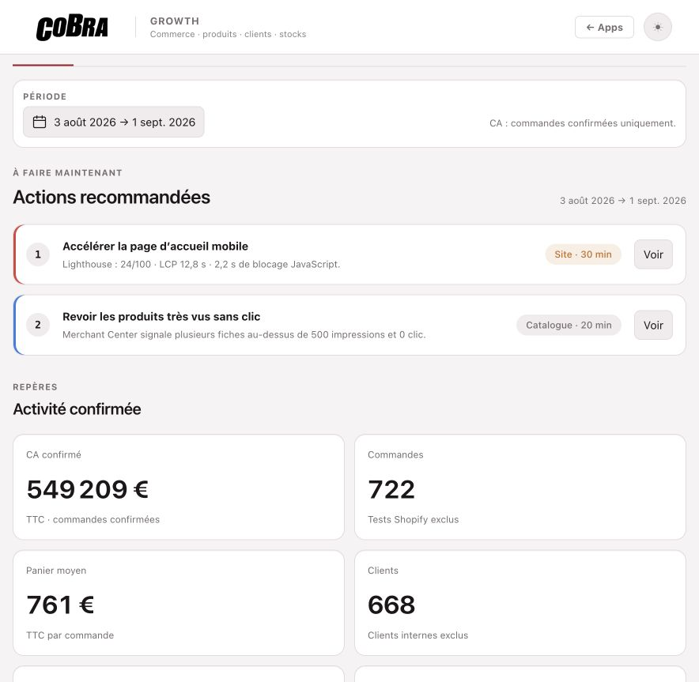
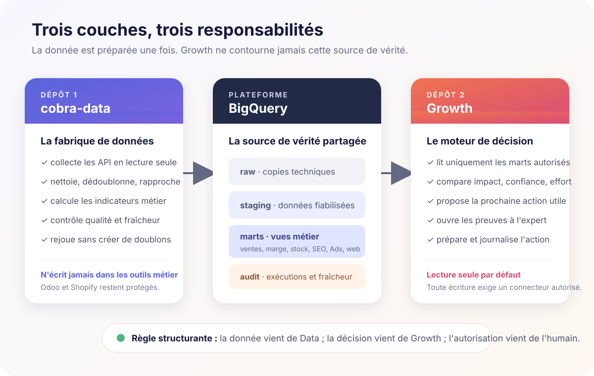
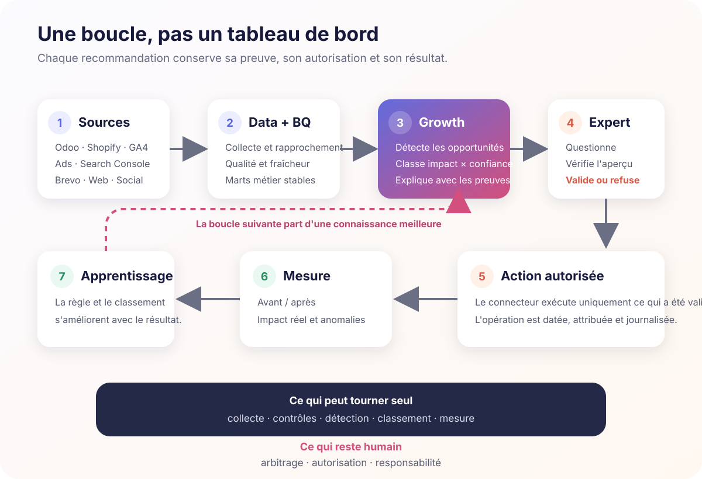
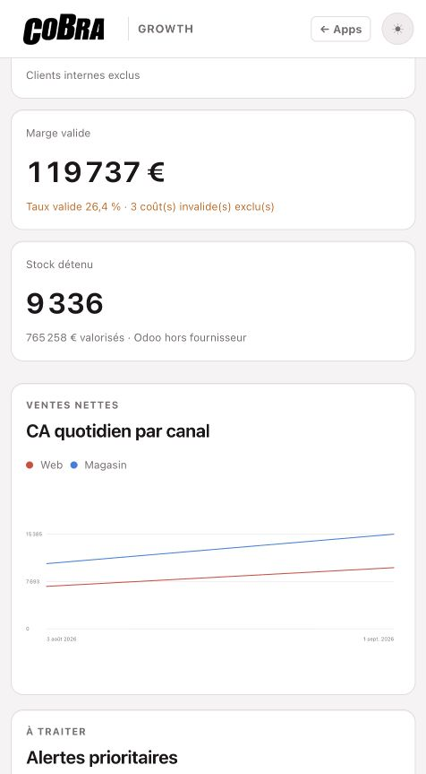

Cobra · Growth
Growth : remplacer dix tableaux de bord par une file d'actions
En fin de semaine dernière, il n'y avait pas de cahier des charges. J'avais surtout jeté des idées dans une conversation : arrêter d'ouvrir dix outils, ne plus ajouter un tableau de bord à la pile, et construire quelque chose qui puisse dire quoi faire maintenant, pourquoi, et avec quelles preuves.
J'ai travaillé avec ChatGPT et Codex principalement pendant le week-end. Le mardi, Growth tournait en production : commerce, acquisition, SEO, performance web, email et social réunis dans un même centre de décision. Ce n'était déjà plus une maquette, mais une application connectée aux vraies sources, protégée, testée et capable de faire remonter du travail concret.
Le chantier a débordé très vite de la simple interface : plusieurs dépôts et briques ont été créés ou restructurés, la plateforme Data et ses couches BigQuery ont été fiabilisées, l'application Growth a été déployée avec ses garde-fous, et un cœur agentique réutilisable est désormais prêt à être instancié pour d'autres projets comme Haute Fidélité.
Un point important sur la méthode : contrairement à la plupart des projets documentés jusque-là dans ce journal, Growth n'a pas été construit avec Claude. Le cadrage, l'architecture, le développement, les tests, le déploiement et cette documentation ont été réalisés presque entièrement dans ChatGPT avec Codex. Claude n'est intervenu qu'à la marge sur ce chantier.
Le problème
Les informations utiles existaient déjà, mais elles vivaient dans des outils différents : Odoo pour les ventes, la marge et le stock ; Shopify pour le flux e-commerce ; GA4 et Google Ads pour la mesure ; Search Console et Merchant Center pour la visibilité ; Brevo pour l'email ; Lighthouse pour la performance ; les plateformes sociales pour l'organique et le paid.
Chaque outil sait produire son tableau de bord. Aucun ne répond seul à une question simple : quelle action mérite réellement notre temps aujourd'hui ?
Ce qui a été construit
- un accueil limité aux actions prioritaires ;
- une barre principale pour poser une question, ouvrir une preuve, rafraîchir les données ou préparer une action ;
- un rapprochement Odoo ↔ Shopify et une lecture croisée GA4, Ads et ventes réelles ;
- un backlog SEO issu de Search Console, complété à la demande par DataForSEO ;
- des contrôles Merchant Center, Lighthouse, liens, erreurs HTTP, Brevo et réseaux sociaux ;
- un moteur commun réutilisable pour une future instance Haute Fidélité dans HL OS ;
- un garde-fou : toute écriture sensible reste soumise à validation humaine.

Comment le système est découpé
Le produit repose sur deux dépôts de code et une plateforme de données. Cette séparation évite que l'interface Growth reconstruise ses propres chiffres ou accède directement aux données brutes.
- Le dépôt
cobra-datafabrique la donnée fiable. Il collecte Odoo et Shopify en lecture seule, intègre les autres sources analytiques, nettoie, déduplique, rapproche les identifiants et construit les indicateurs métier. Il porte aussi les contrôles de qualité, les curseurs de reprise et la surveillance de fraîcheur. - BigQuery conserve les différentes couches.
cobra_rawreçoit les copies techniques,cobra_stagingles fiabilise,cobra_martspublie les vues métier stables etcobra_auditgarde la trace des traitements. BigQuery n'est pas un troisième dépôt : c'est la plateforme commune entre Data et les applications. - Le dépôt applicatif
cobra-pilotage, dansapps/growth, transforme les faits en décisions. Growth lit uniquement une liste autorisée de marts et les indicateurs agrégés de fraîcheur. Il classe les opportunités, montre les preuves, répond aux questions et prépare les actions. Il ne peut ni modifier BigQuery, ni consulterrawoustaging, ni écrire dans Odoo ou Shopify par défaut.

En production, le navigateur passe par la protection de apps.cobra.fr, puis par le service Growth exécuté sur Cloud Run avec une identité Google dédiée. Cette identité dispose du droit de lire les seules tables utiles, jamais de les créer, les modifier ou les supprimer.
Comment circule une action
La collecte, les contrôles, la détection des anomalies et le classement des opportunités peuvent tourner automatiquement. En revanche, une action sensible suit un contrat explicite : preuve visible, aperçu du changement, validation humaine, exécution par un connecteur autorisé, journal puis mesure avant/après.

Le changement de philosophie
Le produit avait commencé comme un tableau de bord. C'était utile pour vérifier que les données remontaient, mais insuffisant pour changer la façon de travailler. La page d'accueil a donc été retournée : les indicateurs détaillés sont devenus des preuves secondaires. Le premier écran présente quelques propositions classées par impact, confiance, effort et urgence.
Le flux cible est volontairement lisible : demande → analyse → aperçu du changement → validation → exécution → journal → mesure. Growth peut lire et rafraîchir automatiquement. Il ne doit pas modifier un prix, un stock, une campagne, un email ou une publication sociale sans le droit correspondant.

La difficulté réelle
Le code de l'interface n'était pas la partie la plus coûteuse. Le travail difficile consistait à décider quelle source croire et à empêcher les rapprochements trompeurs. Odoo reste la vérité commerciale. Shopify décrit le flux web. Les plateformes publicitaires donnent leur attribution déclarée. GA4 décrit le comportement observé. Ces chiffres peuvent être comparés, mais ils ne doivent jamais être confondus.
Le premier apprentissage important est venu de cette règle : lorsque la couverture analytics est insuffisante par rapport aux commandes réelles, Growth doit recommander de fiabiliser la mesure avant de proposer un déplacement de budget.
Temps comprimé et valeur de développement
Le calendrier réel tient presque sur une ligne : idées encore floues en fin de semaine, architecture et construction pendant le week-end, première version en production le mardi 1er septembre. Entre les deux, il a fallu créer la donnée manquante, confronter les sources, écrire les règles de sécurité, tester les requêtes réelles, corriger l'interface et déployer.
La vitesse ne vient donc pas d'une étape sautée ou d'une démonstration maquillée en produit. Elle vient de boucles extrêmement courtes entre une idée, sa vérification dans les systèmes réels, son implémentation et sa mise en production. C'est cette compression du temps entre intention et usage réel qui constitue probablement la partie la plus impressionnante du projet.
| Prestataire | Charge | Délai | Budget HT |
|---|---|---|---|
| Freelance senior polyvalent | 30–45 jours | 6–9 semaines | 25–42 k€ |
| Petite équipe spécialisée | 40–55 jours-homme | 4–6 semaines | 40–70 k€ |
| Agence avec pilotage et garantie | 50–70 jours-homme | 6–10 semaines | 60–95 k€ |
La valeur de remplacement du développement actuel se situe autour de 45 à 55 k€ HT, avec un point central proche de 50 k€ HT. Une industrialisation complète — supervision durable des connecteurs, boucle avant/après, droits fins et documentation d'exploitation — porterait plutôt l'ensemble vers 65 à 80 k€ HT.
Ce chiffrage estime un coût de reconstruction externe, pas la valorisation financière du logiciel ni un retour sur investissement. Repères : baromètre Malt 2026 et synthèse des TJM IT en France.
Ce que ça change
La valeur n'est pas d'avoir ajouté un nouveau tableau de bord à la collection. Elle est de pouvoir progressivement cesser d'ouvrir dix interfaces pour reconstituer une situation.
Growth rassemble les faits, propose le prochain travail et conserve les preuves accessibles à l'expert. Le même cœur pourra servir un commerçant comme Cobra ou un éditeur comme Haute Fidélité, avec des données, comptes et règles séparés.
La prochaine étape n'est donc pas d'ajouter cent graphiques. C'est de fermer la boucle : mesurer ce qui s'est réellement passé après chaque action, puis rendre la recommandation suivante meilleure que la précédente.